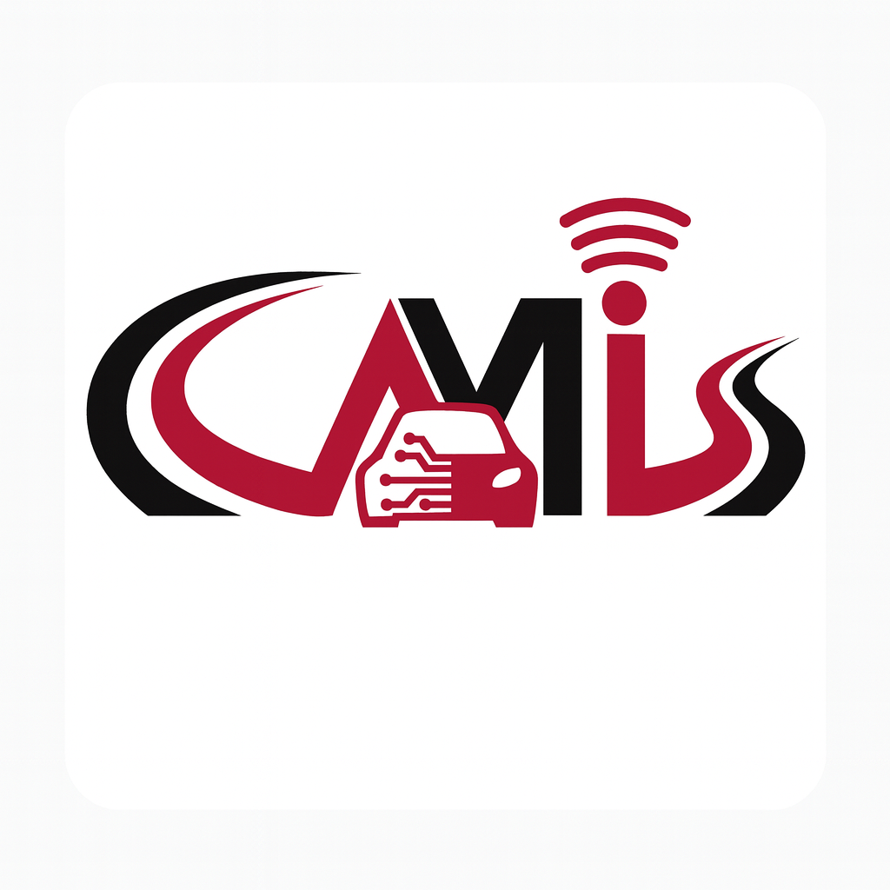
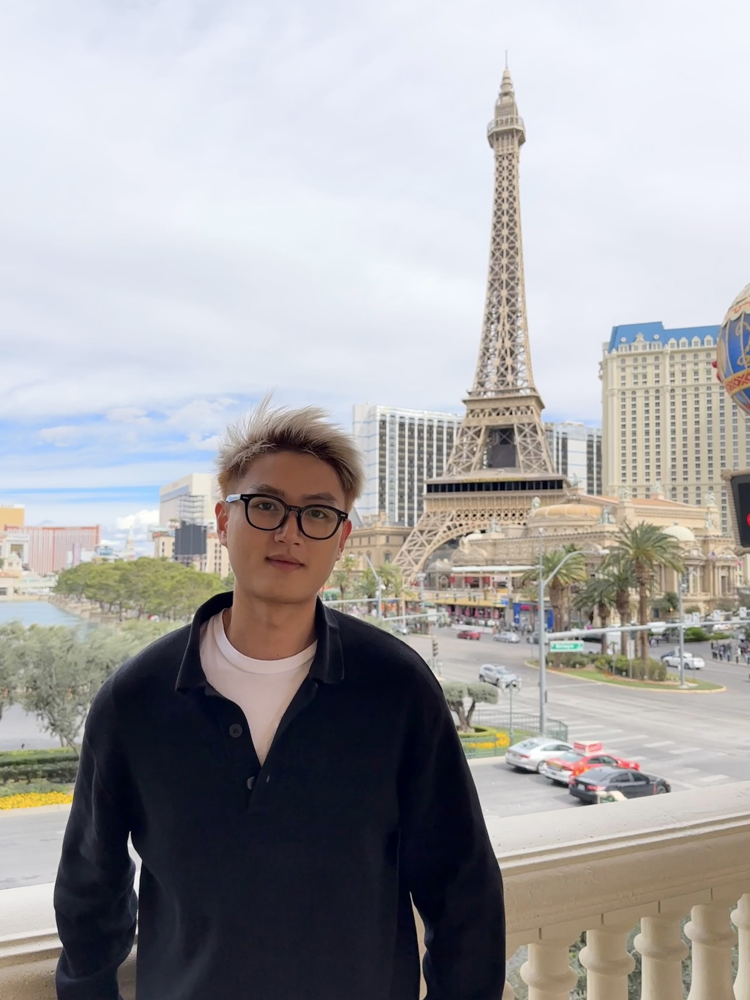
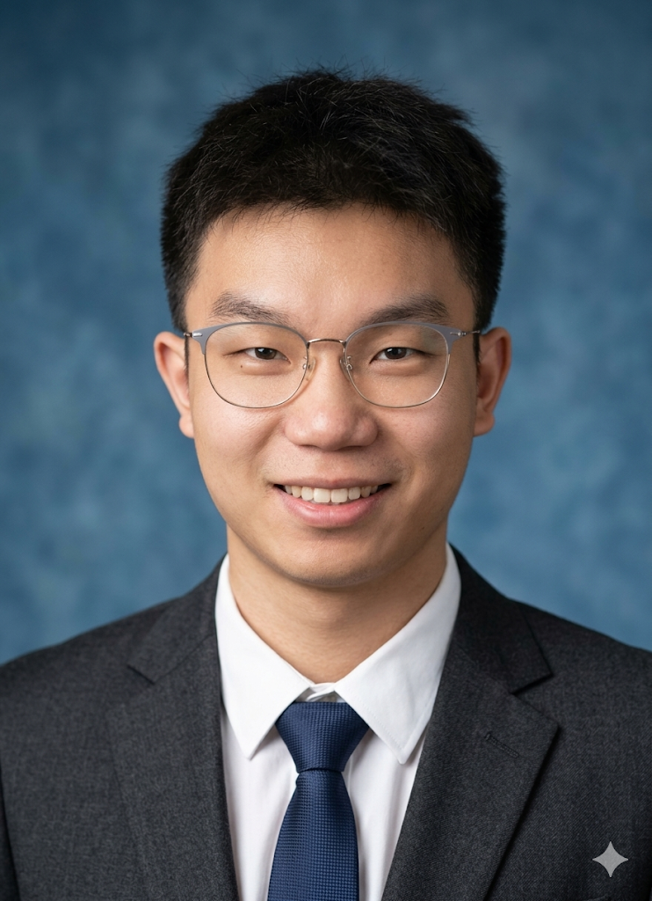

Mobility Lab
Connected and Automated Mobility & Infrastructure Systems
University of Georgia | College of Engineering
🔬 About Us
Welcome to the official GitHub organization of the **Mobility Lab** at the University of Georgia.
We are a research group dedicated to advancing safer and smarter transportation systems through research in Connected and Automated Vehicles (CAVs), Robotics, Smart Infrastructure, and Cyber-Physical Systems. Our research bridges the gap between theoretical algorithms and real-world applications, focusing on perception, planning, and control in complex environments.
📰 News
- [2026] 🎉 Our paper "MACE: Mixture-of-Experts Accelerated Coordinate Encoding for Large-Scale Scene Localization and Rendering" has been accepted by ICRA 2026.
👨🏫 Principal Investigator
|
Dr. Handong Yao Assistant Professor School of Environmental, Civil, Agricultural and Mechanical Engineering (ECAM) Institutes: • Faculty Fellow, Institute of Artificial Intelligence 🔬 Focus: CAV, CPS, Smart Transportation, Smart Infrastructure, AI, Safety 🌐 Faculty Profile ✉️ handong.yao@uga.edu |
🎓 Research Assistants
 |
Tianle Zhu Ph.D. Student (ECAM) 🔬 Focus: Cooperative Perception, AI, Safety 🌐 Profile Link ✉️ tianle.zhu@uga.edu |
 |
Haohua Que Ph.D. Student (ECAM) 🔬 Focus: Autonomous Vehicle, Robotics, Computer Vision, AI Application 🌐 Google Scholar ✉️ hq10606@uga.edu |
|
Qianyi Wu Ph.D. Student (ECAM) 🔬 Focus: CAV Modeling and Simulation, AI, CPS 🌐 Profile Link ✉️ qianyi.wu@uga.edu |
|
|
Richard Alexander Booth Fritz Master Student (IAI) 🔬 Focus: CAV Network Optimization and Simulation, AI 🌐 Profile Link ✉️ Richard.Fritz@uga.edu |
| Former Team Member | Period |
|---|---|
|
Luke Greenfield Undergraduate Student (ECAM) |
2025 Fall |
|
James Volfson Young Dawgs Intern (North Oconee High School) |
2025 Spring |
🚀 Research Areas
Our team works on cutting-edge technologies, including but not limited to:
- Autonomous Driving Perception: Bird's-Eye-View (BEV) mapping, Object Detection, and Sensor Fusion (LiDAR/Camera).
- Smart Transportation and Infrastructure: AI-driven traffic management and roadside perception.
- Robotics & Control: Reinforcement Learning for robotic manipulation and path planning.
- Vehicle-Infrastructure Coordination: Vehicle-to-Everything (V2X) communication and collaborative operations.
📚 Projects
- Tribal & Rural Autonomous Vehicles for Efficiency, Livability and Safety (TRAVELS), USDOT, 2026-2032
- Creating a Ten-Year Traffic Safety Infrastructure Plan for the University of Georgia, USDOT, 2026-2028
- Rural Road Infrastructure Assessment and Enhancement for Autonomous Vehicle Deployment, USDOT CR2C2, 2025-2026
- Realistic Autonomous Vehicle Behavior Investigation for Stakeholder Empowerment (RAISE), FHWA, 2024-2027
- Infrastructure & Movement Pressure Analysis for Campus Travel (IMPACT), UGA Data Dawg, 2026-2026
- Safe and Futuristic Ecosystem for Vulnerable Road Users (SAFER), UGA, 2024-2025
📝 Recent Publications
-
MACE: Mixture-of-Experts Accelerated Coordinate Encoding for Large-Scale Scene Localization and Rendering.
Mingkai Liu, Dikai Fan, Haohua Que, Haojia Gao, Xiao Liu, Shuxue Peng, Meixia Lin, Shengyu Gu, Ruicong Ye, Wanli Qiu, Handong Yao, Ruopeng Zhang, Xianliang Huang.
IEEE International Conference on Robotics and Automation (ICRA), 2026 (Accepted). -
Investigating the Car Following Behavior of Electric Vehicles with One-Pedal Driving Through Field Experiments.
T. Zhu, H. Yao (2026). The 105th TRB Annual Meeting, Washington, DC. -
Modeling Autonomous Driving Systems-Equipped Vehicle Interactions with Traffic Signs.
X. Wang, Q. Li, H. Yao, J. Hourdos, G. McHale (2026). The 105th TRB Annual Meeting, Washington, DC. -
MACE: Mixture-of-Experts Accelerated Coordinate Encoding for Large-Scale Scene Localization and Rendering.
Mingkai Liu, Dikai Fan, Haohua Que, Haojia Gao, Wanli Qiu, Ruicong Ye, Handong Yao, Xianliang Huang, Fei Qiao (2025).
The Edge AI for Robotics workshop at IROS 2025, Hangzhou, China, October 2025 (Best Paper Award). -
Interaction dataset of autonomous vehicles with traffic lights and signs.
Li, Z., Bao, Z., Meng, H., Shi, H., Li, Q., Yao, H., & Li, X. (2025). Communications in Transportation Research, 5, 100217. -
Edge-computing-based operations for automated vehicles with different cooperation classes at stop-controlled intersections.
Soleimaniamiri, S., Yao, H., Ghiasi, A., Li, X., Bujanović, P., Vadakpat, G., Lochrane, T.W.P. (2025).
IET Intell. Transp. Syst. 19, e12577. https://doi.org/10.1049/itr2.12577